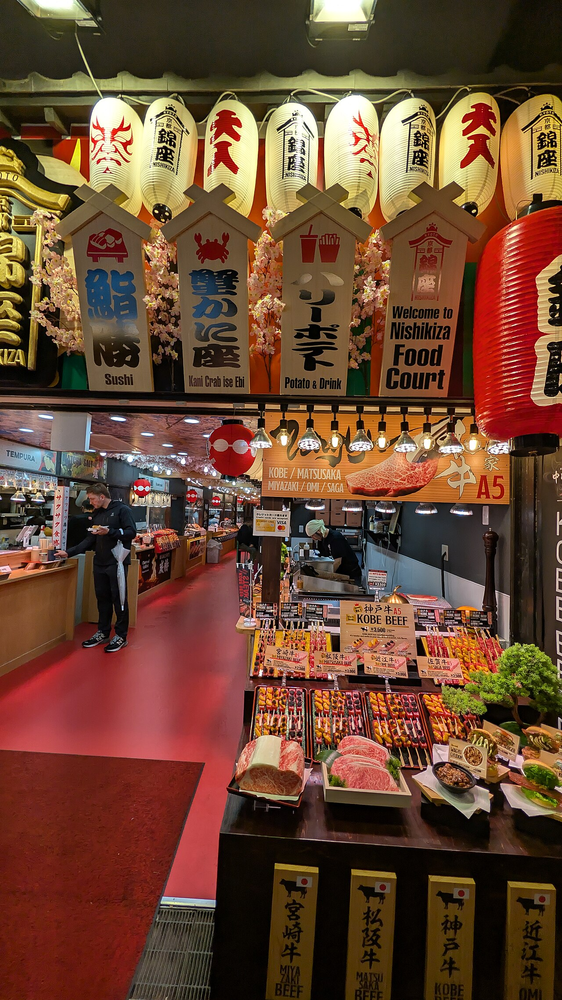
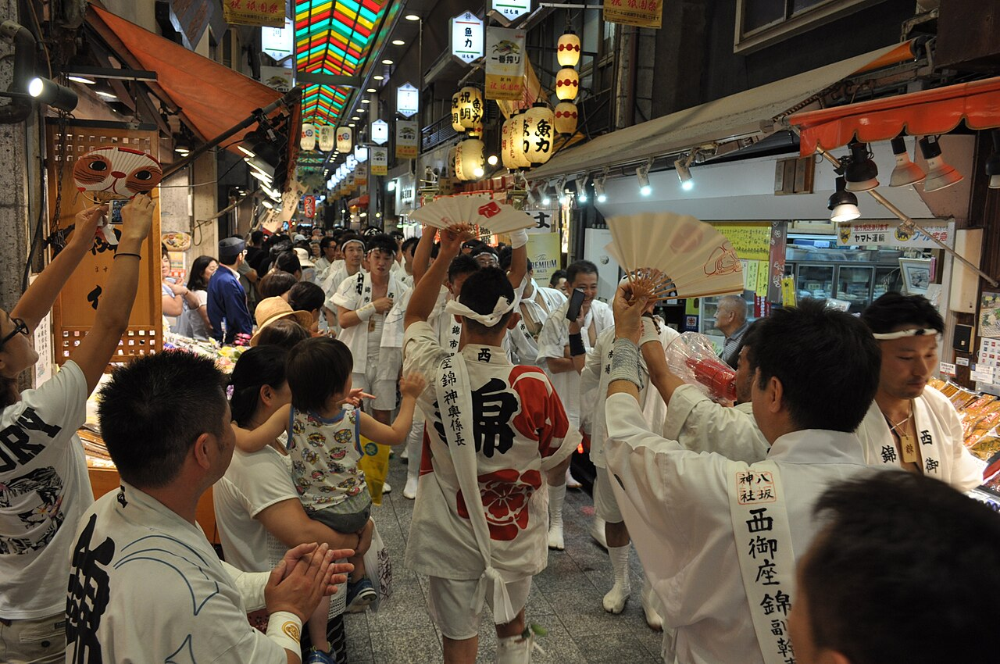

A five-block covered market street that has fed Kyoto for 400 years. Over a hundred stalls of skewers, sweets, pickles and seafood, perfect for a grazing first lunch straight off the bullet train.



Things to do
01Skewer crawl
Grilled scallops, wagyu skewers, fried chicken, eat your way stall to stall.
02Tamagoyaki
Warm, sweet rolled omelet made in front of you, a market classic.
03Weird & wonderful
Baby octopus with a quail egg inside its head, tiny candied fish, pickle barrels.
04Matcha everything
Soft serve, warabi mochi and lattes, your first taste of Uji tea before the real thing.
05Knife shops
Aritsugu has forged blades here since 1560, worth a look even if you don't buy.
Good to know
- Eat standing at the stall you bought from, walking and eating is frowned on.
- Go hungry and order small everywhere.
- Most stalls wind down by late afternoon, it's a lunch spot not a dinner one.